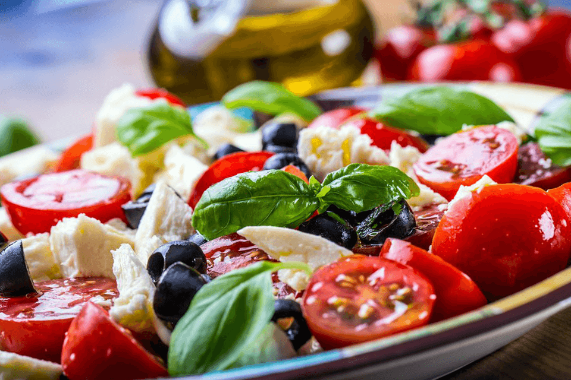

Todos los miércoles, aprovecha un 30% de descuento en todos nuestros platos. Es el día perfecto para disfrutar de la deliciosa cocina mediterránea a un precio increíble. Ya sea para una comida en familia o una cena especial, nuestros platos frescos y llenos de sabor te están esperando.
Nuestro Nuevo Menú

En Little Lemon, celebramos la riqueza de la cocina mediterránea con platos frescos, auténticos y llenos de sabor. Utilizamos ingredientes de la mejor calidad, desde aceites de oliva extra virgen hasta hierbas aromáticas y especias tradicionales, para llevar a tu mesa lo mejor del Mediterráneo.
Descubre nuestra selección de entrantes, platos principales y postres, inspirados en recetas clásicas de Grecia, Italia, España y más. Desde ensaladas frescas y mariscos hasta carnes a la parrilla y pastas artesanales, cada bocado es una invitación a disfrutar de una experiencia única.
Déjate sorprender por nuestros sabores y vive un viaje gastronómico sin salir de la ciudad.
En Little Lemon, queremos que disfrutes de una experiencia mediterránea inolvidable en el mejor ambiente. Ya sea para una cena íntima, una reunión con amigos o una celebración especial, tenemos el espacio perfecto para ti.
Reserva tu mesa de forma rápida y sencilla. Solo elige la fecha, la hora y el número de personas, y nosotros nos encargamos del resto.
Déjanos ser parte de tu próximo momento especial. ¡Te esperamos!
En Little Lemon, estamos listos para recibirte y ofrecerte lo mejor de la cocina mediterránea.
🕒 Lunes a Viernes: 12:00 PM - 10:00 PM
🕒 Sábados y Domingos: 10:00 AM - 11:00 PM
Ya sea para un almuerzo relajado, una cena especial o un brunch de fin de semana, siempre tendrás un lugar en nuestra mesa.